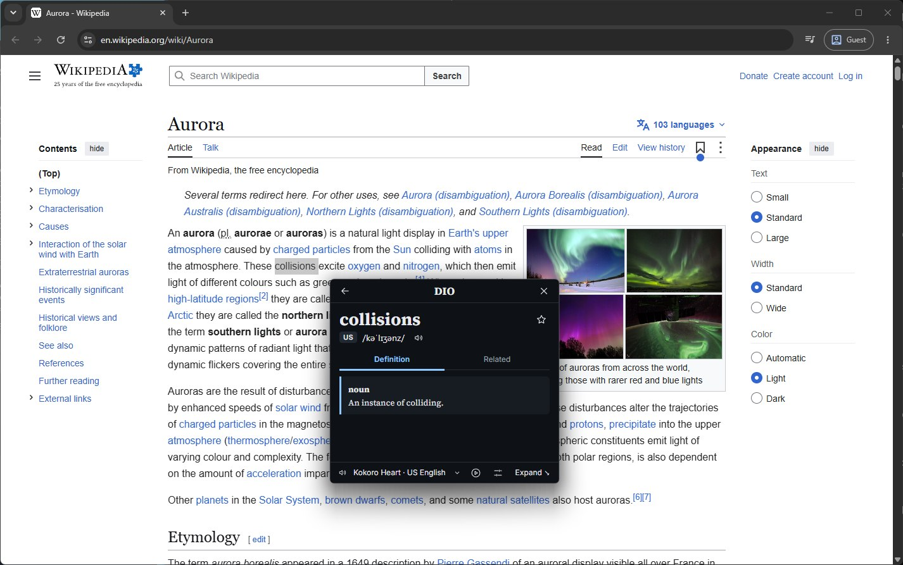
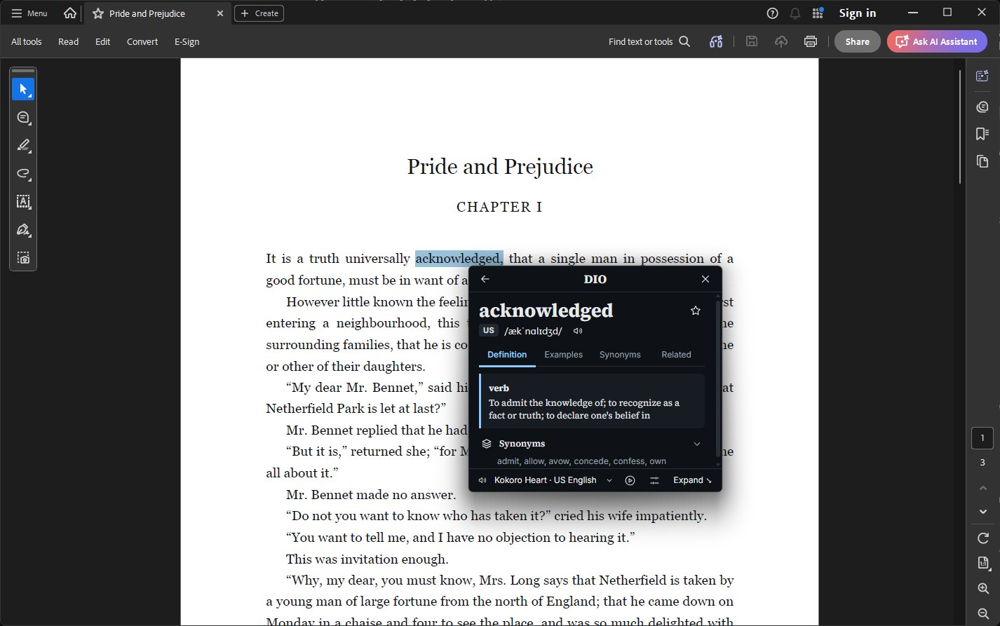
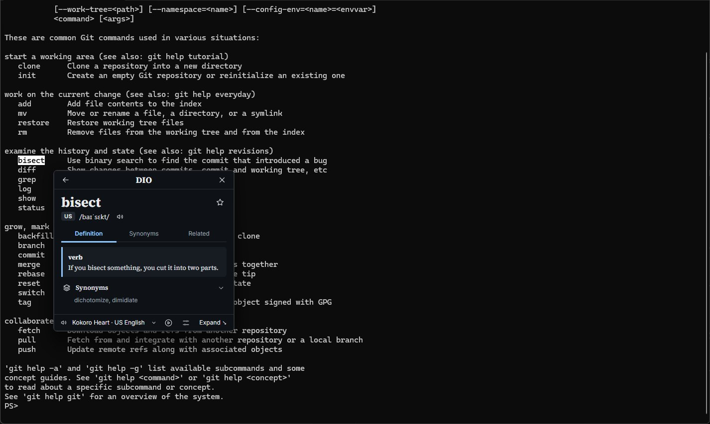
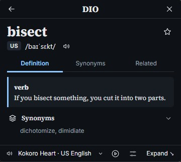

Says any word
Click the speaker beside the IPA to hear the word in a US or UK voice.

Highlight a word in any app and press Ctrl + Alt + D. Its meaning, pronunciation and a voice that reads it appear beside the word, so you never leave what you are reading.

Browsers, PDF readers, terminals and game stores. The popup opens beside the word and closes when you click away.
Double-click a word in an article. DIO reads the selection through Windows accessibility, so your clipboard is never touched.
Look up words in Adobe Acrobat and other PDF readers. A comma or quote mark picked up with the word is left out.
Look up jargon in Windows Terminal. DIO copies with Ctrl + Insert, so the running program is never interrupted.
Read a store page in Steam and check a word without leaving it. Your previous clipboard comes back after every lookup.



From Simple English Wiktionary first. Expand adds the fuller list.
IPA labelled with its source, and a speaker to hear it.
32,000 meanings for abbreviations like TTL and DPI.
Star a word to keep it in your vocabulary list.

DIO speaks with Kokoro, an open voice model. Install it once from Settings, about 95 MB, and it works offline.
Click the speaker beside the IPA to hear the word in a US or UK voice.
Select up to 2,000 characters in any app and press the shortcut. Press it again to stop.
Speech is made on your CPU, so nothing you have read aloud is sent anywhere.
No account and no admin rights. DIO starts in the system tray.
Get DIO-setup.exe, 31 MB, for 64-bit Windows 10 or 11.
DIO is not code-signed yet. If Windows protected your PC, click More info, then Run anyway.
Highlight a word and press Ctrl + Alt + D. Press Escape or click away to close it.
Yes. 152,000 English words and the acronym list are built in. Online sources add simpler definitions when you are connected.
Only the word you look up, to Simple English Wiktionary and the Free Dictionary API. Text read aloud never leaves your computer.
Apps running as administrator, games, remote desktop windows and the classic console can block it.
Open Settings, then Apps, then Installed apps, and uninstall DIO.